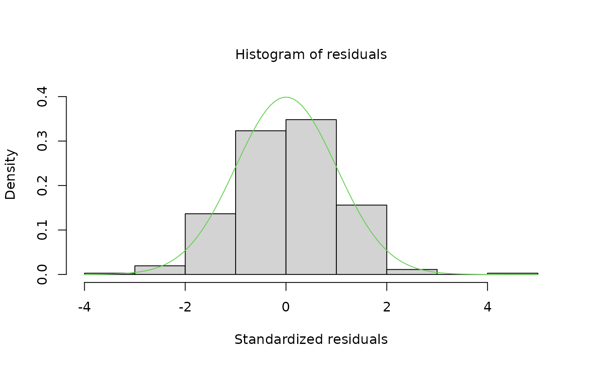
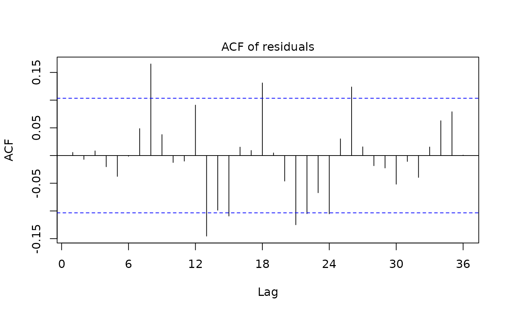
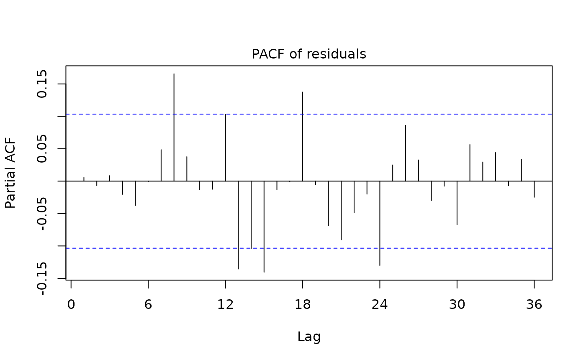
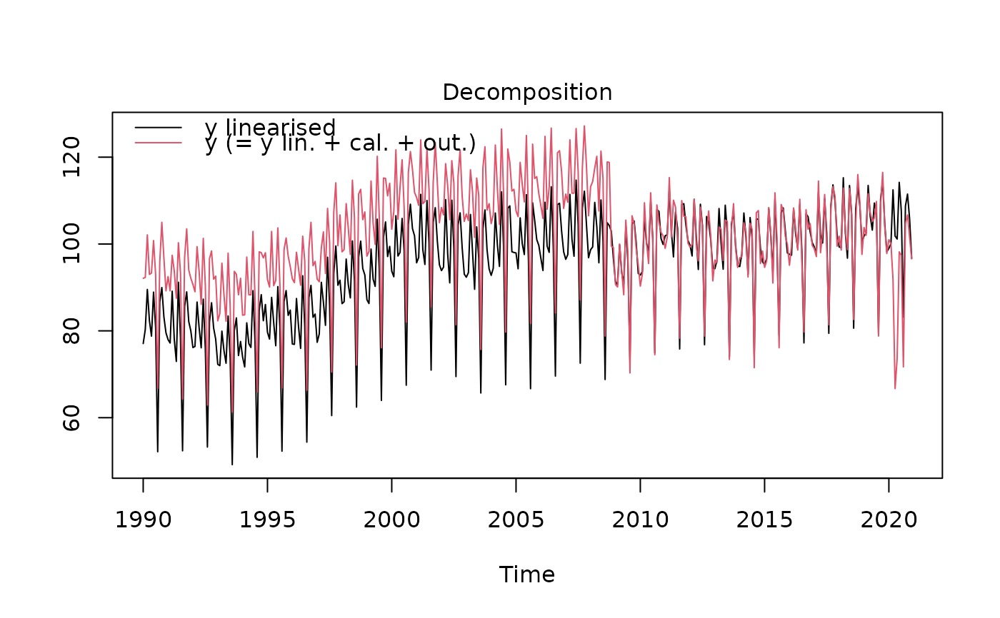
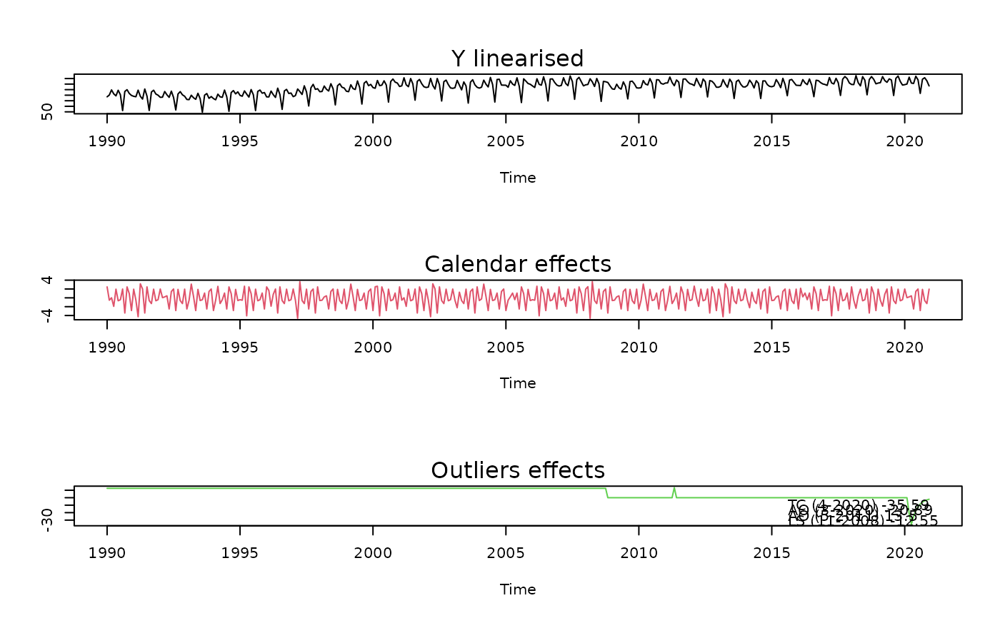
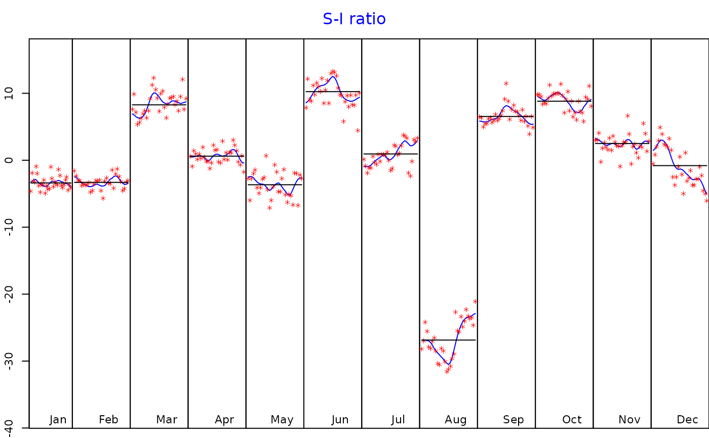
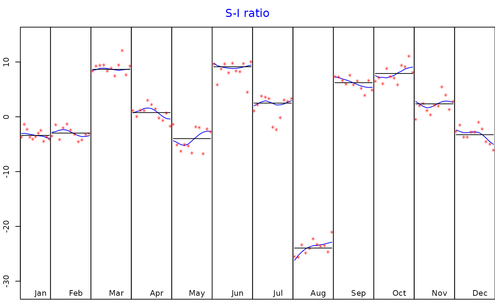
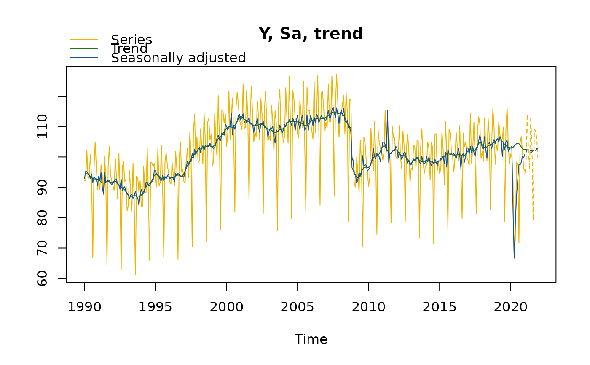
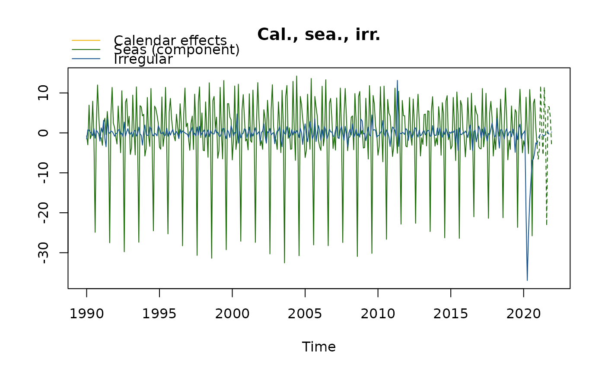
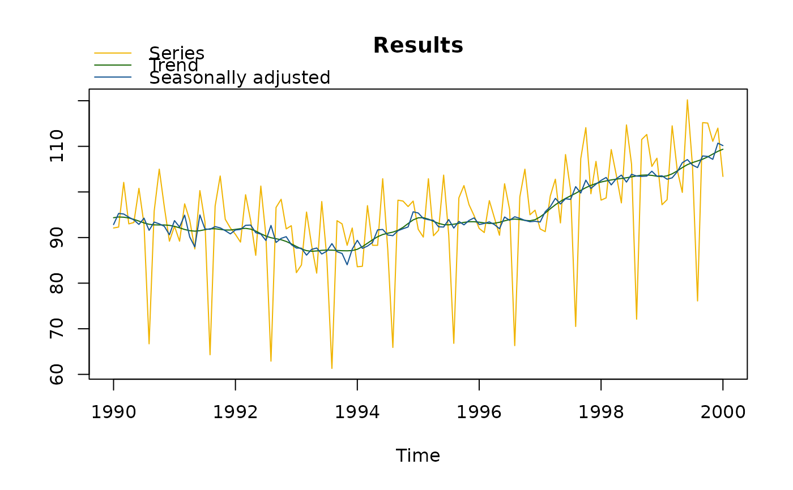

Plotting regarima, decomposition or final results of a SA
Source:R/regarima_plot.R, R/sa_plot.R
plot.RdPlotting methods for the S3 class objects around the seasonal adjustment:
"regarima" for RegARIMA,"decomposition_X11" and "decomposition_SEATS" for
the decomposition with X13 and TRAMO-SEATS, "final" for the final SA results
and "SA" for the entire seasonal adjustment object.
The function plot.SA just calls the function plot.final.
Usage
# S3 method for regarima
plot(
x,
which = 1:6,
caption = list("Residuals", "Histogram of residuals", "Normal Q-Q", "ACF of residuals",
"PACF of residuals", "Decomposition", list("Y linearised", "Calendar effects",
"Outliers effects"))[sort(which)],
ask = prod(par("mfcol")) < length(which) && dev.interactive(),
...
)
# S3 method for decomposition_X11
plot(x, first_date, last_date, caption = "S-I ratio", ylim, ...)
# S3 method for decomposition_SEATS
plot(x, first_date, last_date, caption = "S-I ratio", ylim, ...)
# S3 method for final
plot(
x,
first_date,
last_date,
forecast = TRUE,
type_chart = c("sa-trend", "cal-seas-irr"),
caption = c(`sa-trend` = "Y, Sa, trend", `cal-seas-irr` =
"Cal., sea., irr.")[type_chart],
ask = length(type_chart) > 1 && dev.interactive(),
ylim,
...
)
# S3 method for SA
plot(x, ...)Arguments
- x
the object to plot
- which
a numeric vector specifying which graphs should be plotted: (1) "Residuals", (2) "Histogram of residuals", (3) "Normal Q-Q", (4) "ACF of residuals", (5) "PACF of residuals", (6) "Decomposition", (7) "Decomposition - zoom"
- caption
a string containing the graph title
- ask
a Boolean. If
TRUE, the user will be prompted before a new graphical page is started.- ...
other parameters
- first_date
the plot starting date. If missing, the plot starts at the beginning of the time-series.
- last_date
the end date of the plot. If missing, the plot ends at the end of the time-series (eventually, including forecast).
- ylim
the y limits of the plot.
- forecast
a Boolean indicating if forecasts should be included in the plot. If
TRUE, the forecast is plotted.- type_chart
a string indicating which type of chart to plot
Examples
# \donttest{
myseries <- ipi_c_eu[, "FR"]
mysa <- x13(myseries, spec = c("RSA5c"))
# RegArima
plot(mysa$regarima) # 6 graphics are plotted by default




# To plot only one graphic (here, the residuals) and change the title:
plot(mysa$regarima, which = 1, caption = "Plot of residuals")
plot(mysa$regarima, which = 7)

# Decomposition
plot(mysa$decomposition) # To plot the S-I ratio

plot(mysa$decomposition, first_date = c(2010, 1)) # To start the plot in January 2010

# Final
plot(mysa$final) # 2 graphics are plotted by default


# To only plot one graphic (here the raw data, the seasonally adjusted data and the trend),
# To change the last date and the title
plot(mysa$final, last_date = c(2000, 1),
caption = "Results", type_chart = "sa-trend")

# }